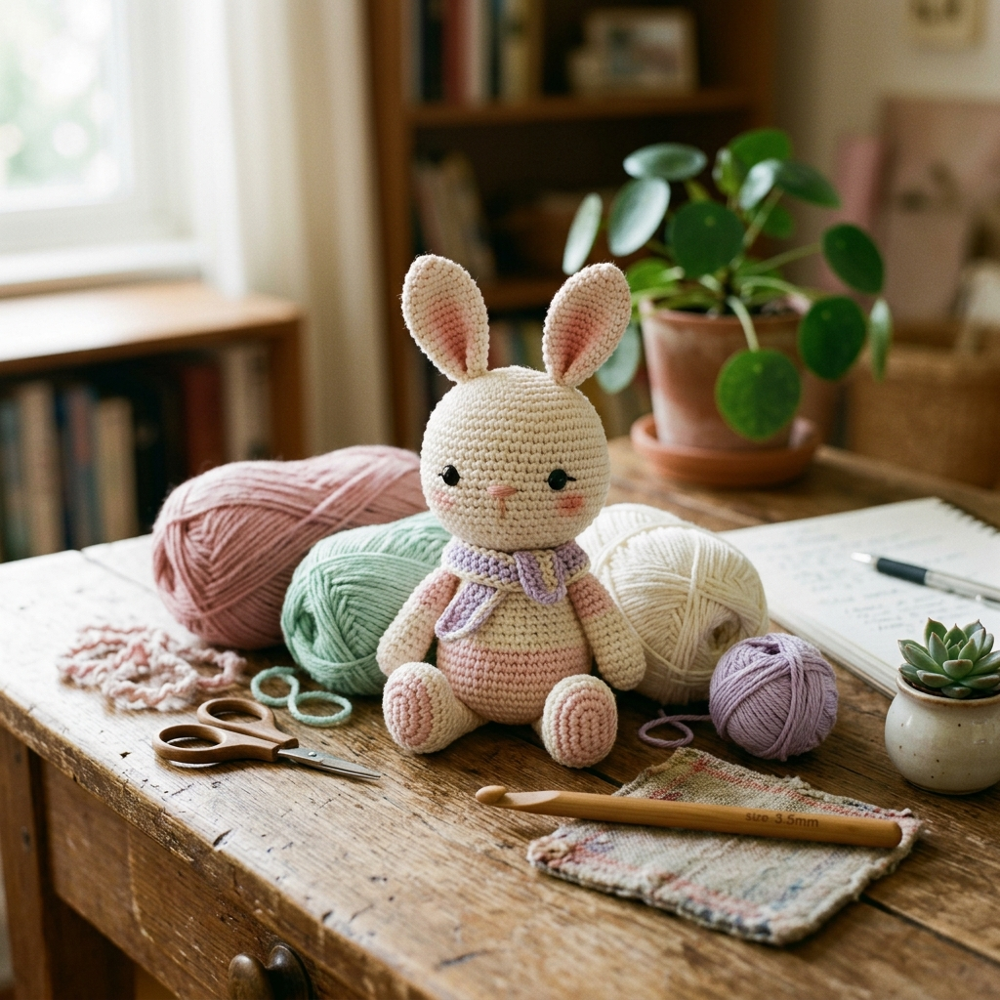

"Amigurumi" (อะมิกุรุมิ) มาจากภาษาญี่ปุ่น แปลว่า "ตุ๊กตาที่ถักด้วยไหมพรม" ศิลปะนี้มีต้นกำเนิดจากญี่ปุ่นในยุค 1980s และแพร่หลายไปทั่วโลก จุดเด่นคือชิ้นงานน่ารัก ขนาดพอดีมือ และสามารถทำได้ในเวลาไม่กี่ชั่วโมง บทความนี้จะสอนทุกอย่างตั้งแต่ศูนย์ แม้ไม่เคยถักมาก่อนก็ทำได้!
สารบัญบทเรียน
- อุปกรณ์ที่ต้องเตรียม
- คำย่อในแพทเทิร์น
- การทำ Magic Ring (MR)
- ลาย Single Crochet (sc) ขั้นตอนละเอียด
- การเพิ่มห่วง (Increase / inc)
- การลดห่วง (Invisible Decrease / dec)
- ถักหัวกระต่าย — Round by Round
- ถักลำตัว — Round by Round
- ถักหู + แขน + ขา
- การยัดใยและปิดชิ้นงาน
- การเย็บประกอบ
- การปักหน้า + ตกแต่ง
- เคล็ดลับมืออาชีพ
🧺 ขั้นที่ 1: อุปกรณ์ที่ต้องเตรียม
การเตรียมอุปกรณ์ให้ครบถ้วนก่อนเริ่มถักเป็นสิ่งสำคัญมาก เพราะถ้าอุปกรณ์ไม่ครบอาจทำให้ต้องหยุดกลางคัน
ไหมพรมคอตตอน
ใช้ไหมพรม 100% Cotton เส้นเบอร์ 2–3 (ฉลากแนะนำเข็ม 2.5–3.5 มม.) สีหลัก: ครีม/ขาว สำหรับตัวกระต่าย และสีชมพูอ่อนสำหรับหูด้านใน
เข็มโครเชต์
ขนาด 2.5 มม. (สำคัญมาก! ใช้เข็มเล็กกว่าที่ฉลากแนะนำ 1 ไซส์ เพื่อให้เนื้อผ้าแน่น ใยไม่โผล่)
ใยสังเคราะห์ (Stuffing)
Polyester Fiberfill ใช้ยัดตัวตุ๊กตา หาซื้อได้ที่ร้านขายอุปกรณ์งานฝีมือหรือออนไลน์ ราคาไม่แพง
ตาแก้ว/ตาพลาสติก
ขนาด 8–10 มม. มีก้านล็อค (Safety Eyes) ควรใส่ก่อนยัดใย ถ้าทำให้เด็กเล็กให้ปักตาด้วยด้ายดำแทน
เข็มเย็บผ้า (Tapestry Needle)
เข็มปลายทื่อ ช่องใหญ่ ใช้เย็บประกอบชิ้นส่วน ปักหน้า และร้อยปิดชิ้นงาน
เครื่องหมายห่วง (Stitch Marker)
ใช้หนีบที่ห่วงแรกของแต่ละรอบ เพื่อนับรอบได้ง่าย ถ้าไม่มีใช้ด้ายสีต่างๆ หนีบแทนได้
กรรไกร + เข็มหมุด
กรรไกรสำหรับตัดเส้นด้าย และเข็มหมุดสำหรับหมุดชิ้นส่วนก่อนเย็บ
📖 ขั้นที่ 2: คำย่อที่ใช้ในแพทเทิร์น
แพทเทิร์นโครเชต์ใช้ตัวย่อเพื่อประหยัดเนื้อที่ ควรจำให้ขึ้นใจก่อนเริ่มถัก:
| ตัวย่อ | ชื่อเต็ม (ภาษาอังกฤษ) | ความหมาย |
|---|---|---|
| MR | Magic Ring | วงกลมเวทมนตร์ — จุดเริ่มต้นของชิ้นงานกลม |
| ch | Chain | ห่วงโซ่ — ถักห่วงต่อเนื่องเป็นสาย |
| sc | Single Crochet | ลายเดี่ยว — ลายพื้นฐานที่ใช้มากที่สุดใน Amigurumi |
| inc | Increase | เพิ่มห่วง = ถัก sc 2 ครั้งในช่องเดียวกัน |
| dec | Invisible Decrease | ลดห่วง = รวม 2 ห่วงเป็น 1 แบบไม่เห็นรอย |
| sl st | Slip Stitch | ห่วงลื่น — ใช้เชื่อมจุดหรือปิดรอบ |
| R / Rnd | Round | รอบ — การถักครบหนึ่งรอบวง |
| st | Stitch | ห่วง/ลาย — จำนวนห่วงทั้งหมดในรอบนั้น |
| BLO | Back Loop Only | ถักเฉพาะห่วงด้านหลัง — สร้างสันนูน |
| FLO | Front Loop Only | ถักเฉพาะห่วงด้านหน้า |
| fasten off | Fasten Off | ปิดงาน — ตัดด้ายและร้อยปิด |
✨ ขั้นที่ 3: การทำ Magic Ring (MR) — วงกลมเวทมนตร์
Magic Ring คือเทคนิคเริ่มต้นสำหรับชิ้นงานที่ถักเป็นวงกลม ทำให้รูตรงกลางปิดสนิท ไม่มีช่องว่างเหมือนการขึ้นห่วงโซ่ธรรมดา
สร้างวงไหมพรม
จับเส้นด้ายด้วยมือซ้าย พันเส้นด้ายวนรอบนิ้วชี้และนิ้วกลาง 1 รอบ ปลายด้ายยาวควรอยู่ด้านบน ปลายที่ต่อกับม้วนอยู่ด้านล่าง
แทงเข็มผ่านวง
จับเข็มโครเชต์ด้วยมือขวา แทงเข็มผ่านวงที่สร้างขึ้น จากด้านบนลงด้านล่าง
เกี่ยวด้ายขึ้น (Yarn Over)
ใช้เข็มเกี่ยวเส้นด้ายปลายม้วน (ด้านล่าง) ดึงขึ้นมาผ่านวง ตอนนี้จะมีห่วง 1 ห่วงอยู่บนเข็ม นี่คือ Chain 1 (ห่วงยก)
ถัก sc ในวง Magic Ring
แทงเข็มผ่านวงอีกครั้ง → เกี่ยวด้าย → ดึงขึ้น (ตอนนี้บนเข็มมี 2 ห่วง) → เกี่ยวด้ายอีกครั้ง → ดึงผ่านทั้ง 2 ห่วงพร้อมกัน = สำเร็จ sc 1 ครั้ง ทำซ้ำจนครบ 6 ครั้ง
ดึงปิดวง
จับปลายด้ายยาว ค่อยๆ ดึงออก วงกลมตรงกลางจะปิดสนิท ตอนนี้จะมี 6 sc เรียงเป็นวงเล็กๆ สวยงาม
ฝึกบนนิ้วที่ใหญ่กว่า เช่น นิ้วหัวแม่มือ จะง่ายกว่าสำหรับมือใหม่ หรือลองดูวิดีโอบน YouTube ค้นหา "Magic Ring crochet tutorial slow" เพื่อดูภาพเคลื่อนไหว
🪡 ขั้นที่ 4: ลาย Single Crochet (sc) — ทีละขั้น
sc คือลายพื้นฐานที่สุดและใช้มากที่สุดใน Amigurumi สั้น แน่น แข็งแรง เหมาะสำหรับงานตุ๊กตา
แทงเข็มผ่านห่วงถัดไป
จับงานด้วยมือซ้าย แทงเข็มผ่านห่วงบนชิ้นงานจาก ด้านหน้าไปด้านหลัง เข็มควรผ่านห่วงทั้ง 2 เส้น (ห่วงหน้าและหลัง) ยกเว้นกรณีที่แพทเทิร์นระบุ BLO หรือ FLO
Yarn Over (YO) — พาด/เกี่ยวด้าย
พาดเส้นด้ายผ่านเข็มจากซ้ายไปขวา (หรือพันรอบเข็ม 1 ครั้ง) ตอนนี้บนเข็มจะมี 2 ห่วง
ดึงขึ้น (Pull Through)
ดึงด้ายที่เกี่ยวไว้ขึ้นมาผ่านห่วงที่แทงเข็มอยู่ ตอนนี้บนเข็มมี 2 ห่วง (ห่วงเดิมกับห่วงใหม่)
YO แล้วดึงผ่าน 2 ห่วง
พาดด้ายผ่านเข็มอีกครั้ง → ดึงผ่าน 2 ห่วงที่อยู่บนเข็มพร้อมกัน ตอนนี้เหลือ 1 ห่วง บนเข็ม = สำเร็จ sc 1 ครั้ง! 🎉
- อย่าดึงด้ายแน่นเกินไป ห่วงควรเลื่อนบนเข็มได้อย่างสบาย
- อย่าดึงหลวมเกินไป จะทำให้เนื้องานไม่แน่น ใยโผล่ออกมา
- ความตึงสม่ำเสมอ (Gauge) คือกุญแจสำคัญ ฝึกบ่อยๆ จะดีขึ้นเอง
➕ ขั้นที่ 5: การเพิ่มห่วง (Increase / inc)
การ Increase ทำให้ชิ้นงานขยายกว้างขึ้น ใช้สำหรับส่วนที่ต้องการให้ป่องออก เช่น หัว ลำตัว
วิธีทำ: ถัก sc ลงในช่องเดียวกัน 2 ครั้ง
แทงเข็มลงในห่วงเดิม → ถัก sc ปกติ 1 ครั้ง → แทงเข็มลงในห่วงเดิมอีกครั้ง → ถัก sc อีก 1 ครั้ง = inc เสร็จสิ้น รอบนี้จะได้ 2 sc จากห่วงเดิม 1 ห่วง
ถ้าแพทเทิร์นบอกว่า *inc* 6 ครั้ง หมายความว่า ถัก inc ทุกห่วง ทำซ้ำ 6 ครั้ง จะได้ 12 sc ในรอบนั้น
➖ ขั้นที่ 6: Invisible Decrease (dec) — ลดห่วงแบบไม่เห็นรอย
การ decrease ทั่วไปจะสร้างรอยนูนที่มองเห็นได้ แต่ Invisible Decrease จะทำให้รอยลดเรียบสวยงาม เหมาะมากสำหรับงาน Amigurumi
แทงเข็มผ่านห่วงหน้าเท่านั้น (Front Loop)
แทงเข็มผ่าน ห่วงหน้า (Front Loop) ของห่วงแรก โดยไม่ผ่านห่วงหลัง
แทงเข็มผ่านห่วงหน้าของห่วงที่สอง
ยังไม่ต้องดึงด้าย แทงเข็มต่อผ่านห่วงหน้าของห่วงถัดไปอีก 1 ห่วง ตอนนี้เข็มผ่าน Front Loop ของ 2 ห่วงพร้อมกัน
YO แล้วดึงผ่าน 2 ห่วง → YO ดึงผ่าน 2 ห่วง
เกี่ยวด้าย → ดึงผ่าน 2 ห่วงที่เข็มผ่านอยู่ (ตอนนี้บนเข็มมี 2 ห่วง) → เกี่ยวด้ายอีกครั้ง → ดึงผ่านทั้ง 2 ห่วง = dec สำเร็จ ได้ 1 sc จาก 2 ห่วงเดิม
🐰 ขั้นที่ 7: ถักหัวกระต่าย — Round by Round
ถักด้วยไหมสีครีม/ขาว ใช้เข็ม 2.5 มม. (เส้นด้ายสีครีม)
| รอบที่ | วิธีถัก | จำนวน st |
|---|---|---|
| R1 | MR, sc 6 ในวง (ปิดวง Magic Ring) | 6 |
| R2 | *inc* 6 ครั้ง (ถัก inc ทุกห่วง) | 12 |
| R3 | *sc 1, inc* ซ้ำ 6 ครั้ง | 18 |
| R4 | *sc 2, inc* ซ้ำ 6 ครั้ง | 24 |
| R5 | *sc 3, inc* ซ้ำ 6 ครั้ง | 30 |
| R6 | *sc 4, inc* ซ้ำ 6 ครั้ง | 36 |
| R7–11 | sc ตรงๆ ทุกห่วง (5 รอบ) | 36 |
| R12 | *sc 4, dec* ซ้ำ 6 ครั้ง | 30 |
| R13 | *sc 3, dec* ซ้ำ 6 ครั้ง | 24 |
| R14 | ใส่ตาแก้ว (Safety Eyes) ระหว่าง R11–R12 ห่างกัน 8–10 ห่วง แล้วถัก *sc 2, dec* ซ้ำ 6 ครั้ง | 18 |
| R15 | *sc 1, dec* ซ้ำ 6 ครั้ง | 12 |
| R16 | *dec* 6 ครั้ง (ยัดใยให้แน่นก่อน) | 6 |
| จบ | Fasten off ร้อยปิดรู | – |
ใส่ Safety Eyes และ Stitch Marker ก่อนที่รูจะเล็กเกินไป เพราะพอถึง R15–16 จะใส่ไม่ได้แล้ว
🫶 ขั้นที่ 8: ถักลำตัว — Round by Round
ถักด้วยไหมสีเดียวกับหัว ลำตัวจะเล็กกว่าหัวเล็กน้อย
| รอบที่ | วิธีถัก | จำนวน st |
|---|---|---|
| R1 | MR, sc 6 | 6 |
| R2 | *inc* 6 ครั้ง | 12 |
| R3 | *sc 1, inc* ซ้ำ 6 ครั้ง | 18 |
| R4 | *sc 2, inc* ซ้ำ 6 ครั้ง | 24 |
| R5–9 | sc ตรงๆ ทุกห่วง (5 รอบ) | 24 |
| R10 | *sc 2, dec* ซ้ำ 6 ครั้ง | 18 |
| R11 | *sc 1, dec* ซ้ำ 6 ครั้ง | 12 |
| จบ | ยัดใย Fasten off เหลือด้ายยาวไว้เย็บประกอบ | – |
👂 ขั้นที่ 9: ถักหู + แขน + ขา
🐰 หู (ทำ 2 ชิ้น)
ถักสีครีม (ส่วนนอก) + สีชมพูอ่อน (ส่วนใน)
| รอบที่ | วิธีถัก (สีครีม) | จำนวน st |
|---|---|---|
| R1 | MR, sc 4 | 4 |
| R2 | *inc* 4 ครั้ง | 8 |
| R3–8 | sc ตรงๆ (6 รอบ) | 8 |
| จบ | Fasten off เหลือด้ายยาวสำหรับเย็บ | – |
สำหรับชิ้นสีชมพู ถักเหมือนกันแต่ทำแค่ R1–R7 เสร็จแล้วนำมาเย็บซ้อนด้านหน้าหู
💪 แขน (ทำ 2 ชิ้น)
| รอบที่ | วิธีถัก | จำนวน st |
|---|---|---|
| R1 | MR, sc 6 | 6 |
| R2–7 | sc ตรงๆ (6 รอบ) | 6 |
| จบ | ยัดใยเล็กน้อย Fasten off เหลือด้ายยาว | – |
🦵 ขา (ทำ 2 ชิ้น)
| รอบที่ | วิธีถัก | จำนวน st |
|---|---|---|
| R1 | MR, sc 6 | 6 |
| R2 | *inc* 6 ครั้ง | 12 |
| R3–4 | sc ตรงๆ (2 รอบ) | 12 |
| R5 | sc 4, *dec* 2 ครั้ง, sc 4 | 10 |
| R6–9 | sc ตรงๆ (4 รอบ) | 10 |
| จบ | ยัดใย Fasten off เหลือด้ายยาว | – |
☁️ ขั้นที่ 10: การยัดใยและปิดชิ้นงาน
ยัดใยให้แน่น แต่ไม่แข็งจนเกินไป
ใยควรแน่นพอที่ทรงกลมจะคงรูป แต่ถ้าแน่นเกินไปชิ้นงานจะแข็งและเข็มเย็บยาก ทดสอบโดยบีบดู ควรยืดหยุ่นเล็กน้อย
ปิดรูด้วย Needle (Running Stitch)
ร้อยเข็มเย็บผ้าด้วยปลายด้าย → เย็บ Running Stitch ผ่านห่วงสุดท้ายที่เหลืออยู่ 6 ห่วง → ดึงด้ายให้แน่น รูจะปิดสนิท → ผ่านด้ายเข้าไปในชิ้นงานแล้วตัด
แทงเข็มผ่านชิ้นงานไปออกอีกด้านหนึ่ง ดึงด้ายตึง ตัดชิดกับผ้า ปลายด้ายจะหดเข้าไปในชิ้นงานและมองไม่เห็น
🔧 ขั้นที่ 11: การเย็บประกอบชิ้นส่วน
หมุดตำแหน่งก่อนเย็บ
ใช้เข็มหมุดหรือเข็มกลัดตำแหน่งของแต่ละชิ้นส่วนก่อนเย็บจริง เพื่อให้มองดูว่าสัดส่วนถูกต้อง ขาควรห่างเท่ากัน หูควรสมมาตร
เย็บขาเข้ากับลำตัว
วางขาไว้ด้านล่างของลำตัว เย็บ Whip Stitch รอบขอบ หมุนเข็มเย็บผ้าเข้าออกอย่างน้อย 2–3 รอบเพื่อความแน่นหนา ปิดด้ายซ่อนไว้ในลำตัว
เย็บแขนเข้ากับลำตัว
วางแขนไว้ด้านข้างลำตัว ประมาณ R4–R5 นับจากบน เย็บแบบเดียวกับขา ตรวจสอบว่าทั้งสองข้างสมมาตรกัน
เย็บหัวเข้ากับลำตัว
วางหัวทับลำตัว ให้รอยต่อของหัว (ด้านใต้) อยู่ชนกับส่วนบนของลำตัว เย็บ Whip Stitch รอบขอบหัวทั้งวง ดึงให้แน่น
เย็บหูเข้ากับหัว
วางหูที่ R2–R3 ของหัว ห่างกันประมาณ 6–8 ห่วง หมุดตำแหน่งก่อน มองจากด้านหน้าว่าดูสมมาตร แล้วค่อยเย็บยึด
😊 ขั้นที่ 12: การปักหน้า + ตกแต่ง
ปักจมูก (Nose)
ใช้ด้ายสีชมพูเข้ม ร้อยเข็มผ่านจากด้านหลังหัว ออกที่ตำแหน่งกึ่งกลางระหว่างตา R12–R13 ปักรูปตัว Y เล็กๆ หรือ V คว่ำ → แทงกลับเข้าหัวซ่อนด้าย
ปักแก้มสีชมพู (Blush)
ใช้ดินสอปากกา Blush (Makeup) ค้นหา "Amigurumi blush" ออนไลน์ หรือใช้ด้ายชมพูปักจุดกลมๆ ข้างละ 1 จุด ด้านล่างตาแต่ละข้าง
ผูกโบว์หรือผ้ากันเปื้อน (ตกแต่งเพิ่ม)
นำริบบิ้นเล็กๆ ผูกเป็นโบว์ที่คอ หรือถักผ้ากันเปื้อนจิ๋วเพิ่มความน่ารัก ชุดตุ๊กตา Amigurumi ที่ตกแต่งดีจะมีมูลค่าสูงมากเวลาขาย
ถ้าทรงออกมาไม่สมบูรณ์แบบในครั้งแรก ไม่ต้องกังวล — ทุกคนต้องผ่านจุดนั้น ยิ่งถักบ่อย ฝีมือยิ่งดีขึ้นเรื่อยๆ ลองถักหลายๆ ตัวแล้วจะเห็นพัฒนาการอย่างชัดเจน!
🏆 ขั้นที่ 13: เคล็ดลับจากมืออาชีพ
ใช้เข็มเล็กกว่าที่ฉลากแนะนำ 1 ไซส์
เนื้อผ้าจะแน่นขึ้น ใยสังเคราะห์ไม่โผล่ ตุ๊กตาจะทรงสวยงามกว่ามาก
ถักเป็น Continuous Rounds (ไม่ต้องปิดแต่ละรอบ)
งาน Amigurumi ส่วนใหญ่ถักแบบวนต่อเนื่อง ไม่ต้อง sl st ปิดหรือ ch1 ขึ้นรอบใหม่ ใช้ Stitch Marker หนีบห่วงแรกของแต่ละรอบแทน
นับห่วงหลังทุกรอบ
ก่อนขึ้นรอบใหม่ นับจำนวนห่วงให้ครบตามแพทเทิร์นทุกครั้ง ถ้าผิดพลาดรีบแก้ตั้งแต่เนิ่นๆ จะง่ายกว่ามาก
ถักหัวก่อนเสมอ
หัวเป็นชิ้นส่วนที่สำคัญที่สุด มีรายละเอียดมากที่สุด ถักให้เสร็จสวยก่อน แล้วค่อยถักลำตัวและส่วนอื่นๆ ตาม
ใส่ Safety Eyes ก่อนยัดใยเสมอ
Safety Eyes มีก้านด้านหลัง ต้องสอดเข้าไปตอนรูยังเปิดอยู่ ถ้ายัดใยแล้วจะใส่ไม่ได้แน่นอน